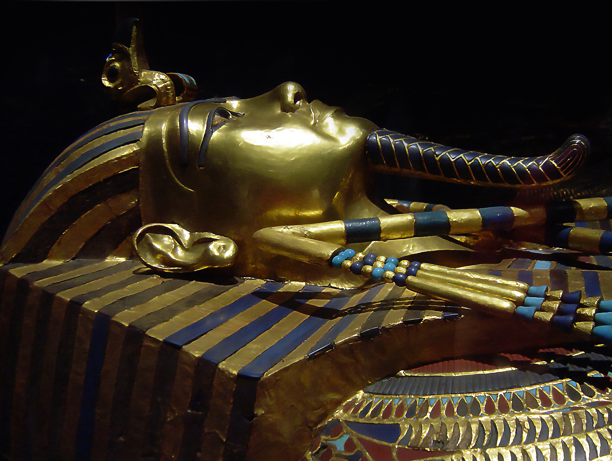

Um arqueólogo explora a Grande Pirâmide de Gizé, a mais famosa do Egito, em busca de uma tumba lendária. Conta-se que essa tumba está protegida por armadilhas e passagens secretas.
Você precisa iluminar o caminho!
Você encontrou uma armadilha, tente usar uma das alavancas para desativar.
Você não conseguiu desativá-la!
Você encontrou uma passagem secreta!

Que pena, quem sabe você volte outra vez.

Decifre o enigma, calculando a seguinte equação: 3x+1 = 13
Que pena! Você não está conseguindo decifrar o enigma, tente novamente!

Parabéns! Você chegou até a tumba do faraó!
Retornando e escolhendo o rio à esquerda, você finalmente encontra a cachoeira escondida e as inscrições que levam à cidade perdida.